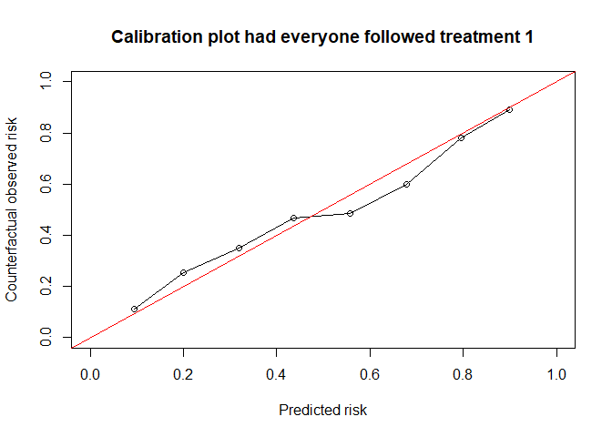
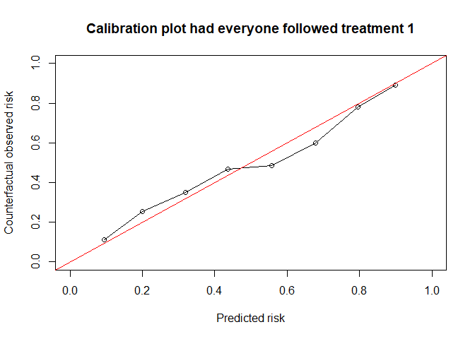

Predictions under interventions are estimates of what a subject’s risk would be if they were to follow a certain counterfactual treatment. Assessing predictive performance for these predictions is challenging, as only the outcome of the realized treatment can be observed.(Keogh, van Geloven, DOI 10.1097/EDE.0000000000001713). This R package facilitates assessing counterfactual performance of interventional predictions.
Installation
You can install the development version of CFeval from GitHub with:
# install.packages("devtools")
devtools::install_github("jvelumc/CFeval")Toy example
Simulate some example data for binary outcome Y and (point) treatment A, confounded by a variable L. Variable P is a prognostic variable for only the outcome. The treatment reduces the risk on a bad outcome (Y = 1) in this simulated example. The R package contains a 5000 row df_dev and a 4000 row df_val, both simulated as described.

library(CFeval)
head(df_dev)
#> id L A P Y0 Y1 Y
#> 1 1 -0.56047565 0 0.3500025 1 0 1
#> 2 2 -0.23017749 0 0.8144417 0 0 0
#> 3 3 1.55870831 0 -0.5166661 0 1 0
#> 4 4 0.07050839 1 -2.6922644 0 0 0
#> 5 5 0.12928774 1 -1.0969546 0 0 0
#> 6 6 1.71506499 1 -1.2554751 1 1 1Fitting a logistic regression model on this data without accounting for the confounder L results in a model where treatment apparently increases the risk on the outcome
naive_model <- glm(Y ~ A + P, family = "binomial", data = df_dev)
summary(naive_model)
#>
#> Call:
#> glm(formula = Y ~ A + P, family = "binomial", data = df_dev)
#>
#> Coefficients:
#> Estimate Std. Error z value Pr(>|z|)
#> (Intercept) 0.11397 0.04514 2.525 0.01157 *
#> A 0.20486 0.06394 3.204 0.00135 **
#> P 1.13624 0.03941 28.828 < 2e-16 ***
#> ---
#> Signif. codes: 0 '***' 0.001 '**' 0.01 '*' 0.05 '.' 0.1 ' ' 1
#>
#> (Dispersion parameter for binomial family taken to be 1)
#>
#> Null deviance: 6897.8 on 4999 degrees of freedom
#> Residual deviance: 5746.9 on 4997 degrees of freedom
#> AIC: 5752.9
#>
#> Number of Fisher Scoring iterations: 4Fitting a model using IP-weighting to account for the confounder results in a model where treatment decreases the risk on the outcome, which we know to be true in our simulated data
causal_model <- glm(Y ~ A + P, family = "binomial", data = df_dev,
weights = ip_weights(df_dev, A ~ L))
#> Warning in eval(family$initialize): non-integer #successes in a binomial glm!
summary(causal_model)
#>
#> Call:
#> glm(formula = Y ~ A + P, family = "binomial", data = df_dev,
#> weights = ip_weights(df_dev, A ~ L))
#>
#> Coefficients:
#> Estimate Std. Error z value Pr(>|z|)
#> (Intercept) 0.43502 0.03222 13.50 <2e-16 ***
#> A -0.45611 0.04532 -10.06 <2e-16 ***
#> P 1.11034 0.02763 40.19 <2e-16 ***
#> ---
#> Signif. codes: 0 '***' 0.001 '**' 0.01 '*' 0.05 '.' 0.1 ' ' 1
#>
#> (Dispersion parameter for binomial family taken to be 1)
#>
#> Null deviance: 13788 on 4999 degrees of freedom
#> Residual deviance: 11517 on 4997 degrees of freedom
#> AIC: 11282
#>
#> Number of Fisher Scoring iterations: 4If either model is to be used to decide on treatment options A, we need accurate estimates of the counterfactual risk on outcome under both treatment options A = 1 and A = 0.
Validating a model capable of estimating counterfactual risks is challenging. This package aims to guide the user in assessing how well the predictions would match the validation data if all individuals had followed the treatment under which predictions are made.
The main function CFscore() estimates these counterfactual performance measures in a validation dataset, printing all assumptions required along the way.
results_causal <- CFscore(
data = df_val,
model = causal_model,
Y = "Y",
propensity_formula = A ~ L,
treatments = list(0, 1)
)
results_causal
#> Estimation of the performance of the prediction model in a
#> counterfactual (CF) dataset where everyone's treatment was set to 0 and
#> 1.
#> The following assumptions must be satisfied for correct inference:
#> - Conditional exchangeability requires that {L} are sufficient to
#> adjust for confounding and selection bias between treatment and
#> outcome.
#> - Positivity (assess $weights for outliers)
#> - Consistency
#> - No interference
#> - No measurement error
#> - Correctly specified propensity formula
#> metric CF0 CF1
#> 1 Brier 0.197 0.212
#> 2 auc 0.753 0.726
#> 3 OEratio 1.003 0.991Weights are exported:
summary(results_causal$weights)
#> Min. 1st Qu. Median Mean 3rd Qu. Max.
#> 1.017 1.339 1.644 1.996 2.207 14.425And calibration plots:
plot(results_causal) 

Compare that to the counterfactual performance of the naive model:
results_naive <- CFscore(
data = df_val,
model = naive_model,
Y = "Y",
propensity_formula = A ~ L,
treatments = list(0,1),
quiet = TRUE
)
results_naive
#> metric CF0 CF1
#> 1 Brier 0.201 0.218
#> 2 auc 0.753 0.726
#> 3 OEratio 1.126 0.872
plot(results_naive)

Other options
Bootstrapping for 95% confidence intervals (95CI) - in this setting (sample size 4000, binary outcome and treatment, 1 confounder) takes about 30 seconds on my pc with 200 bootstrap iterations. Here we use 50 bootstraps to save time.
CFscore(
data = df_val,
model = causal_model,
Y = "Y",
propensity_formula = A ~ L,
treatments = list(0, 1),
bootstrap = 50,
quiet = TRUE
)
#> bootstrapping : 1 / 50 bootstrapping : 2 / 50 bootstrapping : 3 / 50 bootstrapping : 4 / 50 bootstrapping : 5 / 50 bootstrapping : 6 / 50 bootstrapping : 7 / 50 bootstrapping : 8 / 50 bootstrapping : 9 / 50 bootstrapping : 10 / 50 bootstrapping : 11 / 50 bootstrapping : 12 / 50 bootstrapping : 13 / 50 bootstrapping : 14 / 50 bootstrapping : 15 / 50 bootstrapping : 16 / 50 bootstrapping : 17 / 50 bootstrapping : 18 / 50 bootstrapping : 19 / 50 bootstrapping : 20 / 50 bootstrapping : 21 / 50 bootstrapping : 22 / 50 bootstrapping : 23 / 50 bootstrapping : 24 / 50 bootstrapping : 25 / 50 bootstrapping : 26 / 50 bootstrapping : 27 / 50 bootstrapping : 28 / 50 bootstrapping : 29 / 50 bootstrapping : 30 / 50 bootstrapping : 31 / 50 bootstrapping : 32 / 50 bootstrapping : 33 / 50 bootstrapping : 34 / 50 bootstrapping : 35 / 50 bootstrapping : 36 / 50 bootstrapping : 37 / 50 bootstrapping : 38 / 50 bootstrapping : 39 / 50 bootstrapping : 40 / 50 bootstrapping : 41 / 50 bootstrapping : 42 / 50 bootstrapping : 43 / 50 bootstrapping : 44 / 50 bootstrapping : 45 / 50 bootstrapping : 46 / 50 bootstrapping : 47 / 50 bootstrapping : 48 / 50 bootstrapping : 49 / 50 bootstrapping : 50 / 50
#> metric CF0 CF0.95CI CF1 CF1.95CI
#> 1 Brier 0.197 0.194 - 0.203 0.212 0.208 - 0.214
#> 2 auc 0.753 0.736 - 0.768 0.726 0.718 - 0.735
#> 3 OEratio 1.003 0.977 - 1.022 0.991 0.988 - 1.014Maybe we are only interested in counterfactual performance under level 1
CFscore(
data = df_val,
model = causal_model,
Y = "Y",
propensity_formula = A ~ L,
treatments = 1,
quiet = TRUE
)
#> metric CF1
#> 1 Brier 0.212
#> 2 auc 0.726
#> 3 OEratio 0.991Maybe we have a model for each treatment level
df_dev$ip <- ip_weights(df_dev, A ~ L)
model0 <- glm(Y ~ P, family = "binomial", data = df_dev[df_dev$A == 0, ], weights = ip)
#> Warning in eval(family$initialize): non-integer #successes in a binomial glm!
model1 <- glm(Y ~ P, family = "binomial", data = df_dev[df_dev$A == 1, ], weights = ip)
#> Warning in eval(family$initialize): non-integer #successes in a binomial glm!
CFscore(
data = df_val,
model = list(model0, model1),
Y = "Y",
propensity_formula = A ~ L,
treatments = list(0,1),
quiet = TRUE
)
#> metric CF0 CF1
#> 1 Brier 0.197 0.211
#> 2 auc 0.753 0.726
#> 3 OEratio 1.003 0.990We can also give counterfactual predictions to CFscore, instead of models
cf0 <- predict(model0, newdata = df_val, type = "response")
cf1 <- predict(model1, newdata = df_val, type = "response")
CFscore(
data = df_val,
predictions = list(cf0, cf1),
Y = "Y",
propensity_formula = A ~ L,
treatments = list(0,1),
quiet = TRUE
)
#> metric CF0 CF1
#> 1 Brier 0.197 0.211
#> 2 auc 0.753 0.726
#> 3 OEratio 1.003 0.990And we can also give it user-specified weights, instead of a propensity formula.
prop_model <- glm(A ~ L, family = "binomial", data = df_val)
prop_score <- predict(prop_model, type = "response")
prob_trt <- ifelse(df_val$A == 1, prop_score, 1 - prop_score)
my_ip_weights <- 1 / prob_trt
CFscore(
data = df_val,
predictions = list(cf0, cf1),
Y = "Y",
ip = my_ip_weights,
A = "A", #need to specify treatment var, which is normally inferred from propensity formula
treatments = list(0,1),
quiet = TRUE
)
#> metric CF0 CF1
#> 1 Brier 0.197 0.211
#> 2 auc 0.753 0.726
#> 3 OEratio 1.003 0.990We can also assess performance measures on the observed data with the realized treatment values:
predictions_naive <- predict(naive_model, type = "response", newdata = df_val)
observed_score(predictions = predictions_naive, Y = df_val$Y)
#> metric observed
#> 1 Brier 0.7467057
#> 2 auc 0.2034472
#> 3 OEratio 0.9976336